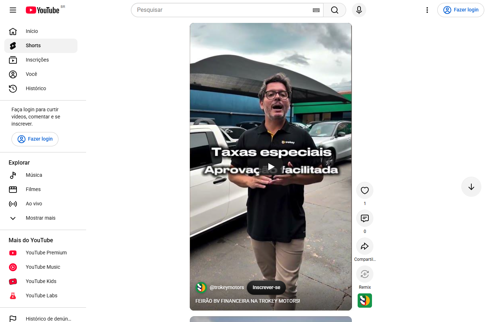
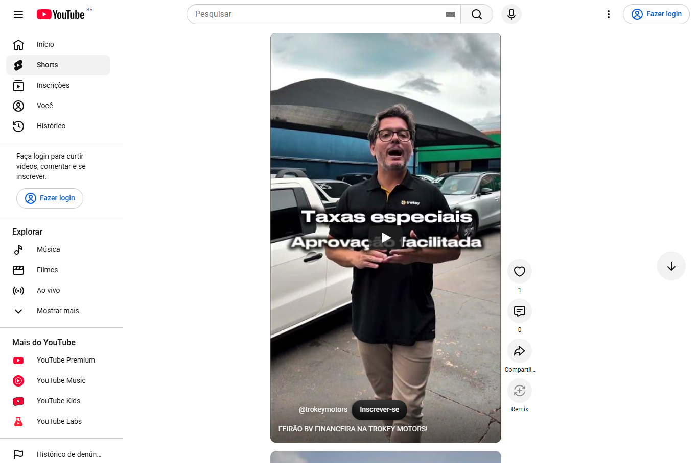

SIMIO · dossiê de candidato · campanha simio-20261119-174043-8bbc · gerado em 2026-11-19T21:22:03+00:00
https://www.youtube.com/shorts/iaA7iViHc30
REVIEW_REQUIRED Prioridade MEDIUM · Cenário B_AMBIGUOUS_COMMUNICATION · Revisão humana: PENDING
Este dossiê apresenta indícios para apoio à auditoria. Não constitui conclusão regulatória. As conclusões automatizadas devem ser verificadas contra as evidências brutas abaixo (screenshots, catálogo e arquivos com hash). Conteúdo de terceiros é exibido como texto; links não são clicáveis por segurança.
A publicação no YouTube Shorts refere-se a uma divulgação comercial legítima realizada pela revenda de veículos 'Trokey Motors' (@trokeymotors). Embora anuncie um 'Feirão BV Financeira', o título ('FEIRÃO BV FINANCEIRA NA TROKEY MOTORS!'), o canal publicador, a descrição ('Em parceria com a BV Fi...') e os elementos visuais (apresentador uniformizado com a marca da loja em um pátio de carros) identificam de forma clara e imediata quem é o estabelecimento responsável, sem induzir o consumidor a acreditar que está interagindo diretamente com um canal oficial do Banco BV.


| Ref | Tipo | Local | Conteúdo |
|---|---|---|---|
| E-URL | domain | url | URL final: https://www.youtube.com/shorts/iaA7iViHc30 (domínio: www.youtube.com) |
| E-COLLECT | network | collection | Status da coleta: OK; HTTP 200; ocorrências: network did not become idle (continuing) |
| E-DISC-001 | text | search_index | Índice de busca (grounding): youtube.com — **Fonte / Canal:** `youtube.com` (Perfil/Vídeo promocional da loja Trokey Motors - Goiânia/GO) | **Evidência de Uso:** Promove o evento sob o nome *"Feirão BV Financeira"* (*"O Feirão BV Financeira é por tempo limitado, e o seu próximo carro pode estar esperando por você aqui na Trokey Motors"*) | **Evidência de Uso:** Promove o evento sob o nome *"Feirão BV Financeira"* (*"O Feirão BV Financeira é por tempo limitado, e o seu próximo carro pode estar esperando por você aqui na Trokey Motors"*), centralizando a captação de interessados no financiamento diretamente via WhatsApp próprio da loja |
| E-SHOT-VIEWPORT | screenshot | viewport | evidence\C9fe227f609\attempt-1\viewport.png (sha256 b399a8b78f506e30…) |
| E-SHOT-FULL | screenshot | page | evidence\C9fe227f609\attempt-1\fullpage.png (sha256 d7db62e1e2405b80…) |
| E-TITLE | title | head | FEIRÃO BV FINANCEIRA NA TROKEY MOTORS! - YouTube |
| E-META-1 | meta | head | description: 🚨 Até o dia 30 de novembro, você tem uma oportunidade imperdível para sair de carro novo com condições especiais de financiamento!🤝 Em parceria com a BV Fi... |
| E-META-2 | meta | head | og:site_name: YouTube |
| E-META-3 | meta | head | og:title: FEIRÃO BV FINANCEIRA NA TROKEY MOTORS! |
| E-META-4 | meta | head | og:description: 🚨 Até o dia 30 de novembro, você tem uma oportunidade imperdível para sair de carro novo com condições especiais de financiamento!🤝 Em parceria com a BV Fi... |
| E-CANONICAL | meta | head | https://www.youtube.com/shorts/iaA7iViHc30 |
| E-HEAD-1 | heading | page | Explorar |
| E-HEAD-2 | heading | page | Mais do YouTube |
| E-HEAD-3 | heading | page | FEIRÃO BV FINANCEIRA NA TROKEY MOTORS! |
| E-HDR | text | header | BR Pular navegação Fazer login |
| E-FOLD | text | viewport (acima da dobra) | BR Fazer login Início Shorts Inscrições Você Histórico Faça login para curtir vídeos, comentar e se inscrever. Fazer login Explorar Música Filmes Ao vivo Mostrar mais Mais do YouTube YouTube Premium YouTube Music YouTube Kids YouTube Labs Histórico de denúncias @trokeymotors Inscrever-se FEIRÃO BV FINANCEIRA NA TROKEY MOTORS! 1 0 Compartilhar Remix |
| E-NAV | nav | header | Página inicial do YouTube <https://www.youtube.com/> | Fazer login <https://accounts.google.com/ServiceLogin?service=youtube&uilel=3&passive=true&continue=https%3A%2F%2Fwww.youtube.com%2Fsignin%3Faction_handle_signin%3Dtrue%26app%3Ddesktop%26hl%3Dpt%26next%3Dhttps%253A%252F%252Fwww.youtube.com%252Fshorts%252FiaA7iViHc30&hl=pt-BR&ec=65620> | Início <https://www.youtube.com/> | Inscrições <https://www.youtube.com/feed/subscriptions> | Você <https://www.youtube.com/feed/you> | Histórico <https://www.youtube.com/feed/history> | Fazer login <https://accounts.google.com/ServiceLogin?service=youtube&uilel=3&passive=true&continue=https%3A%2F%2Fwww.youtube.com%2Fsignin%3Faction_handle_signin%3Dtrue%26app%3Ddesktop%26hl%3Dpt%26next%3Dhttps%253A%252F%252Fwww.youtube.com%252Fshorts%252FiaA7iViHc30&hl=pt-BR> | Música <https://www.youtube.com/channel/UC-9-kyTW8ZkZNDHQJ6FgpwQ> | Filmes <https://www.youtube.com/feed/storefront?bp=ogUCKAU%3D> | Ao vivo <https://www.youtube.com/channel/UC4R8DWoMoI7CAwX8_LjQHig> | YouTube Premium <https://www.youtube.com/premium> | YouTube Music <https://music.youtube.com/> | YouTube Kids <https://www.youtubekids.com/?source=youtube_web> | YouTube Labs <https://www.youtube.com/labs> | Histórico de denúncias <https://www.youtube.com/reporthistory> | Sobre <https://www.youtube.com/about/> | Imprensa <https://www.youtube.com/about/press/> | Direitos autorais <https://www.youtube.com/about/copyright/> | Entre em contato <https://www.youtube.com/t/contact_us/> | Cri |
| E-CTA-1 | cta | header | Guia |
| E-CTA-2 | cta | header | Pular navegação |
| E-CTA-3 | cta | header | Search |
| E-CTA-4 | cta | header | Pesquisar com sua voz |
| E-CTA-5 | cta | header | Configurações |
| E-CTA-6 | cta | page | Reproduzir |
| E-CTA-7 | cta | page | Inscrever-se |
| E-CTA-8 | cta | page | marcar este vídeo como "Gostei" com mais 1 pessoa |
| E-CTA-9 | cta | page | Ver comentários |
| E-CTA-10 | cta | page | Compartilhar |
| E-CTA-11 | cta | page | Remixes |
| E-CTA-12 | cta | page | Veja mais vídeos usando este som |
| E-CTA-13 | cta | page | Próximo vídeo |
| E-TXT-001 | text | page | FEIRÃO BV FINANCEIRA NA TROKEY MOTORS! |
| Dimensão | Sinal | Achado | Refs |
|---|---|---|---|
| VISUAL_IDENTITY | LEGITIMATE | O vídeo no YouTube Shorts apresenta identidade visual própria da revenda de veículos ('Trokey Motors'), com o apresentador vestindo uniforme com a logomarca 'trokey' em um pátio de automóveis, sem imitar a identidade visual institucional do Banco BV. | E-SHOT-VIEWPORT E-FOLD |
| DECLARED_COMMERCIAL_IDENTITY | LEGITIMATE | A publicação identifica claramente o estabelecimento responsável logo no título ('FEIRÃO BV FINANCEIRA NA TROKEY MOTORS!') e por meio do perfil oficial do canal (@trokeymotors). | E-TITLE E-HEAD-3 E-FOLD E-SHOT-VIEWPORT |
| CORRESPONDENT_TRANSPARENCY | LEGITIMATE | A descrição do vídeo explicita que a ação promocional ocorre 'Em parceria com a BV Fi...', deixando clara a relação comercial de intermediação de financiamento de veículos na loja, ainda que não haja menção formal ao termo regulatório 'correspondente' ou CNPJ na interface do YouTube Shorts. | E-META-1 E-META-4 E-TITLE |
| INSTITUTIONAL_LANGUAGE | LEGITIMATE | A linguagem é típica de varejo automotivo ('sair de carro novo com condições especiais de financiamento', 'Taxas especiais', 'Aprovação facilitada'), sem alegar oficialidade bancária ou falar em primeira pessoa como o banco. | E-META-1 E-SHOT-VIEWPORT |
| LOGO_USAGE | NEUTRAL | Não há uso do logotipo do Banco BV no frame capturado; visualiza-se apenas a logomarca da própria loja ('trokey') no uniforme e no avatar do canal. | E-SHOT-VIEWPORT |
| SERVICE_JOURNEY | LEGITIMATE | Trata-se de divulgação publicitária em rede social (YouTube Shorts) voltada à venda e financiamento de veículos na loja anunciante, sem oferta de serviços pós-venda exclusivos de canais oficiais (como 2ª via de boleto ou quitação). | E-URL E-META-1 E-SHOT-VIEWPORT |
| CONTACT_CHANNELS | NEUTRAL | Não foram observados telefones, links externos ou números de WhatsApp na visualização capturada do YouTube Shorts, apenas os botões nativos da plataforma. | E-FOLD E-SHOT-VIEWPORT |
| CONSUMER_CONFUSION | LEGITIMATE | Não há risco de confusão de autoria: o consumidor compreende imediatamente que o vídeo pertence à loja de veículos 'Trokey Motors' anunciando um feirão de financiamento em parceria com a BV Financeira. | E-TITLE E-META-1 E-FOLD E-SHOT-VIEWPORT |
A publicação no YouTube Shorts refere-se a uma divulgação comercial legítima realizada pela revenda de veículos 'Trokey Motors' (@trokeymotors). Embora anuncie um 'Feirão BV Financeira', o título ('FEIRÃO BV FINANCEIRA NA TROKEY MOTORS!'), o canal publicador, a descrição ('Em parceria com a BV Fi...') e os elementos visuais (apresentador uniformizado com a marca da loja em um pátio de carros) identificam de forma clara e imediata quem é o estabelecimento responsável, sem induzir o consumidor a acreditar que está interagindo diretamente com um canal oficial do Banco BV.
Nenhum CNPJ ou razão social identificáveis no conteúdo coletado.
| Tipo | Valor | Ref | Contexto |
|---|---|---|---|
| domain | youtube.com | E-URL | |
| social_profile | https://www.youtube.com/shorts/iaA7iViHc30 | E-URL | |
| social_profile | https://www.youtube.com/feed/subscriptions | E-NAV | |
| social_profile | https://www.youtube.com/feed/you | E-NAV | |
| social_profile | https://www.youtube.com/feed/history | E-NAV | |
| social_profile | https://www.youtube.com/channel/UC-9-kyTW8ZkZNDHQJ6FgpwQ | E-NAV | |
| social_profile | https://www.youtube.com/feed/storefront?bp=ogUCKAU%3D | E-NAV | |
| social_profile | https://www.youtube.com/channel/UC4R8DWoMoI7CAwX8_LjQHig | E-NAV | |
| social_profile | https://www.youtube.com/premium | E-NAV | |
| social_profile | https://www.youtube.com/labs | E-NAV | |
| social_profile | https://www.youtube.com/reporthistory | E-NAV | |
| social_profile | https://www.youtube.com/about/ | E-NAV | |
| social_profile | https://www.youtube.com/about/press/ | E-NAV | |
| social_profile | https://www.youtube.com/about/copyright/ | E-NAV | |
| social_profile | https://www.youtube.com/t/contact_us/ | E-NAV | |
| Índice de busca (grounding): youtube.com — **Fonte / Canal:** `youtube.com` (Perfil/Vídeo promocional da loja Trokey Motors - Goiânia/GO) | **Evidência de Uso:** Promove o evento sob o nome *"Feirão B | E-DISC-001 | ||
| partnership_declaration | Em parceria com | E-META-1 | description: 🚨 Até o dia 30 de novembro, você tem uma oportunidade imperdível para sair de carro novo com condições especiais de financiamento!🤝 Em parceria com a BV Fi... |
Mapeamento indicativo para apoio à auditoria. Não constitui conclusão regulatória; a decisão definitiva pertence à auditoria.
Fonte: NORMATIVE
Art. 14. O contrato de correspondente deve estabelecer: [...] II - vedação à utilização, pelo contratado, de logomarca ou de outros atributos que sejam similares aos adotados pela instituição contratante em suas agências, postos de atendimento, sítio eletrônico na internet, aplicativo ou outras plataformas de comunicação em rede;
Evidência observada: E-FOLD E-SHOT-VIEWPORT
Fonte: NORMATIVE
Art. 14. O contrato de correspondente deve estabelecer: [...] III - divulgação ao público, pelo contratado, de sua condição de prestador de serviços à instituição contratante, identificada pelo nome com que é conhecida no mercado, com descrição dos produtos e serviços oferecidos e canais de contato da instituição contratante, inclusive de sua ouvidoria, em local visível, em destaque e em formato legível, por meio de: a) sítio eletrônico do correspondente na internet, acessível na página inicial; b) aplicativo e outras plataformas de comunicação em rede do correspondente; [...]
Hipótese: Há declaração da condição de correspondente/prestador, mas outros elementos da página (DECLARED_COMMERCIAL_IDENTITY, CONTACT_CHANNELS) podem contradizê-la ou reduzir seu efeito (destaque, legibilidade e identificação da contratante a verificar). A norma disciplina correspondentes contratados; o responsável não foi identificado como correspondente.
Evidência observada: E-DISC-001 E-FOLD E-TITLE
Informação faltante:
Fonte: NORMATIVE
Art. 3º O correspondente atua por conta e sob as diretrizes da instituição contratante, que assume inteira responsabilidade pelo atendimento prestado aos clientes e usuários por meio do contratado.
Hipótese: Atendimento ao público prestado por meio do contratado em condições que podem não seguir as diretrizes da contratante. A norma disciplina correspondentes contratados; o responsável não foi identificado como correspondente.
Evidência observada: E-DISC-001
Informação faltante:
Se o responsável não for correspondente contratado, os indícios podem caracterizar uso indevido de marca ou fraude, fora do escopo da Res. 4.935: avaliar encaminhamento às áreas jurídica/segurança.
Limitações: requisitos contratuais/internos não fornecidos: mapeamento limitado ao texto normativo
| Fonte | Consulta / hipótese | URL original | Título / trecho |
|---|---|---|---|
| grounding | sites ou páginas de lojas de veículos, multimarcas e promotoras que divulgam 'Feirão Banco BV' ou 'Feirão bv financeira' usando a identidade da marca de forma que possa gerar dúvida se o evento ou canal pertence diretamente ao Banco BV H5-establishment:feirao | https://www.youtube.com/shorts/iaA7iViHc30 | youtube.com **Fonte / Canal:** `youtube.com` (Perfil/Vídeo promocional da loja Trokey Motors - Goiânia/GO) | **Evidência de Uso:** Promove o evento sob o nome *"Feirão BV Financeira"* (*"O Feirão BV Financeira é por tempo limitado, e o seu próximo carro pode estar esperando por você aqui na Trokey Motors"*) | **Evidência de Uso:** Promove o evento sob o nome *"Feirão BV Financeira"* (*"O Feirão BV Financeira é por tempo limitado, e o seu próximo carro pode estar esperando por você aqui na Trokey Motors"*), centralizando a captação de interessados no financiamento diretamente via WhatsApp próprio da loja |
Original: https://www.youtube.com/shorts/iaA7iViHc30
Final: https://www.youtube.com/shorts/iaA7iViHc30
| Artefato | Caminho | SHA-256 | Bytes |
|---|---|---|---|
| screenshot_viewport | evidence\C9fe227f609\attempt-1\viewport.png | b399a8b78f506e30035661ab5b8f69edd0f83a29f65c5131e8219ea5aade84fd | 521055 |
| screenshot_full | evidence\C9fe227f609\attempt-1\fullpage.png | d7db62e1e2405b8026ffe787f7095064fd9c1e7fce17664f79260c42da902036 | 518478 |
| html | evidence\C9fe227f609\attempt-1\page.html.txt | 13d1d9925b5f270523a84abb58a2334cec2168a1271a0734e03fc673ad59debe | 1527574 |
| text | evidence\C9fe227f609\attempt-1\text.txt | a2d2934edc17771c330ced3d1d928a102f325dbd2c4b572636ea17bb82204ebc | 580 |
| page_data | evidence\C9fe227f609\attempt-1\page.json | c9d6d6650f8706e6a8c6766e84c356a80210ffced6b0ee3bc511cd8718386f7d | 14644 |
| Quando | De | Para | Nota |
|---|---|---|---|
| 2026-11-19T18:10:11+00:00 | DISCOVERED | QUEUED | prioritised (score -2.0) |
| 2026-11-19T18:34:25+00:00 | QUEUED | COLLECTING | |
| 2026-11-19T18:34:41+00:00 | COLLECTING | COLLECTED | |
| 2026-11-19T18:34:41+00:00 | COLLECTED | ANALYZING | |
| 2026-11-19T18:35:16+00:00 | ANALYZING | COMPLETED |